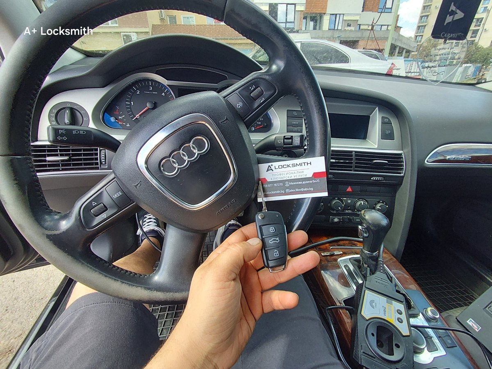

Изгубени ключове за Audi A6 (2007) — пътят минава през волана
Клиентът няма нито един ключ. Колата е Audi A6 от 2007-а. Това не е случай, който се решава със сядане пред диагностичния куплунг — информацията, която ни трябва, не е там.

Накратко: при Audi A6 от това поколение информацията, по която колата разпознава своя ключ, се пази в модула на кормилната колона — същия, който заключва волана. При изгубени всички ключове тя се вади оттам. Операцията е деликатна и малцина се захващат с нея. Колата дойде сутринта; новият ключ работеше до обяд.
Случаят
Audi A6, 2007 година, quattro. Колата стои заключена и напълно изправна. Единственото, което ѝ липсва, е нещо, което да ѝ се представи като свое.
Това е разликата, която хората рядко очакват: добавянето на втори ключ и изработката на ключ от нулата не са една и съща услуга. Докато има един работещ ключ, колата вече е склонна да разговаря. Когато няма нито един, трябва да бъде убедена отвътре.
Защо при този автомобил пътят минава през волана
Къде живее информацията за ключа
При Audi A6 от това поколение запалването и електрическата блокировка на волана не са две отделни неща. Те са един модул върху кормилната колона — познат в практиката като ELV, а по документация като J518. Той управлява и щифта, който физически блокира кормилото, и участва в разпознаването на ключа.
Данните, по които автомобилът признава един ключ за свой, са вътре в този модул. Не в таблото, не в компютъра на двигателя, не на място, до което се стига през диагностичния куплунг, когато няма ключ.
Защо не става „по бързата“
При изгубени всички ключове колата няма причина да сътрудничи. Точно това е смисълът на системата — ако можеше да се заобиколи отвън, тя нямаше да върши работа. Затова се отива при източника: модулът се сваля от колоната, информацията се чете от него, и от нея се изработва ключ, който автомобилът приема като оригинален.
Това не се прави, защото е по-бързо. Прави се, защото при този автомобил това е коректният път — и когато се направи както трябва, в колата не остава следа, че изобщо е имало проблем.
Трудната част
Какво може да се обърка
Модулът, по който се работи, е механизмът, който заключва волана. Това е цялата трудност в едно изречение.
- Самото сваляне е по кормилната колона, в тясно пространство, където всичко наоколо е или електроника, или нещо, което не бива да се огъва.
- Разчитането е еднократна операция по жив контролер. Не е процедура, която можеш да повториш безнаказано, докато не стане.
- Повреден модул значи кола с блокирано кормило. Нов струва скъпо, не е „сложи и готово“ и също трябва да бъде адаптиран към конкретния автомобил.
- Връщането не е финалът. Накрая всичко трябва да си говори пак: новият ключ, имобилайзерът и блокировката на волана.
Защо малцина се захващат
Не защото инструментът е рядък. Инструмент се купува. Захващат се малцина, защото цената на грешката я плаща клиентът, а в деня, в който сгрешиш, няма кой да те замести.
Такива случаи се правят от хора, които са ги правили и преди — достатъчно пъти, че модулът да е познат на ръцете, а не на екрана. Разликата между „знам как се прави“ и „правил съм го“ при тази операция е цяла кола.
Какво направихме
Автомобилът беше приет сутринта. Свалихме модула, разчетохме нужното, изработихме ключа — нарязан по секрета на колата и програмиран към нея — върнахме всичко по местата му и синхронизирахме системата.
До обяд клиентът потегли с работещ ключ. Пали, заключва, отключва, вдига багажника. Нищо по колата не е подменено: същите патрони, същият модул, същата електроника — просто вече има и ключ.
Бързината тук не е трик. Тя идва от това, че случаят е разпознат още по телефона и нужното е било подготвено, преди колата да пристигне. Същото се вижда и в случая с Kia Niro, а защо тази работа изобщо отнема време — тук.
Какво значи това за вас
Ако сте изгубили всички ключове за подобен автомобил, три неща си струва да знаете:
- Марката, моделът и годината решават всичко. Кажете ги по телефона — по тях се разбира колко сложен е случаят и какво трябва да е подготвено предварително.
- Не оставяйте колата да бъде пробвана от няколко места подред. Всеки неуспешен опит по тази електроника прави следващия по-труден, а понякога и по-скъп.
- Не разглобявайте сами. Кормилната колона на такава кола не е място за проба-грешка — там има и въздушна възглавница.
Audi A6 от 2007-а не е най-трудната кола, която сме отваряли. Но е от онези, при които личи разликата между опит и смелост — а тази разлика я усеща клиентът, не ние.
Често задавани въпроси
Какво означава „изгубени всички ключове“ при Audi A6?
Че в колата няма нито един работещ ключ, с който да се влезе в системата по нормалния път. Докато има един ключ, добавянето на втори е сравнително кратка процедура. Когато няма нито един, автомобилът трябва да бъде убеден да приеме напълно нов ключ — а при това поколение Audi данните за това не се подават през диагностичния куплунг.
Защо се налага работа по модула на волана?
При Audi A6 от това поколение електрониката на запалването и електрическата блокировка на волана са в един модул на кормилната колона (ELV, познат и като J518). Точно той пази данните, по които колата разпознава своя ключ. При изгубени всички ключове това е мястото, от което се чете информацията — не защото така е по-бързо, а защото друг коректен път към нея няма.
Колко време отне случаят?
Автомобилът беше приет сутринта и новият ключ работеше до обяд. Това включва свалянето и връщането на модула, разчитането на данните, изработката на самия ключ и синхронизирането на всичко обратно в колата.
Защо не всеки автоключар се захваща с това?
Защото цената на грешката е висока. Модулът, по който се работи, е и механизмът, който заключва волана. Ако бъде повреден при свалянето или при разчитането, колата остава с блокирано кормило, а нов модул струва скъпо и също трябва да бъде адаптиран към конкретния автомобил. Това не е работа, която се учи в движение.
Може ли да се счупи нещо по колата?
При такава операция рискът никога не е нула и не твърдим обратното. Затова се работи подготвено: с познат на ръцете модул, с подходящия инструмент и без бързане в частта, в която бързането не носи нищо. Нашият ангажимент е колата да си тръгне в състоянието, в което е дошла, плюс работещ ключ.
Ще работи ли новият ключ на всичко — запалване, централно, багажник?
Да. Накрая ключът не е „резервен“ и не е ограничен — той е пълноценен ключ за автомобила: пали, заключва и отключва и управлява дистанционните функции, както и фабричният.
Трябва ли да се сменя нещо след това?
Не. Нито патроните по вратите, нито модулът се подменят. Автомобилът остава със своите оригинални механизми, а новият ключ се вписва към тях.
Какво да направя, ако съм изгубил всички ключове?
Обадете се и кажете марката, модела и годината — те определят колко сложен е случаят и какво трябва да бъде подготвено предварително. Повечето такива автомобили се обслужват на място в София. Не разглобявайте нищо сами и не оставяйте колата да бъде „пробвана“ от няколко места подред — всеки неуспешен опит прави следващия по-труден.
Имате подобен случай?
Обадете се за оглед или консултация — работим в София с посещение на адрес.